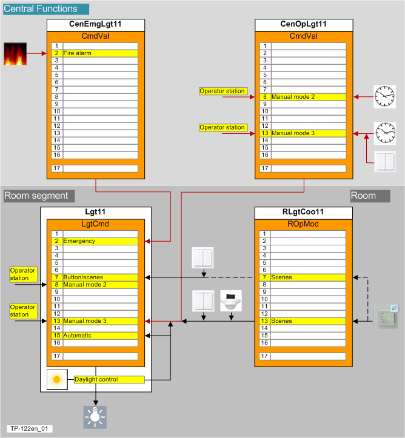
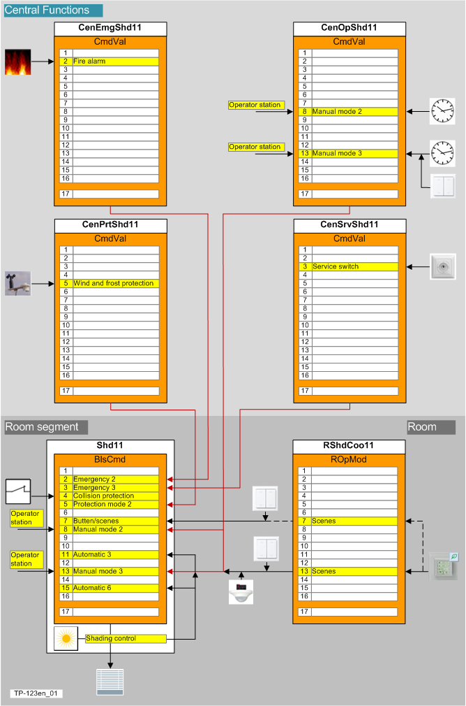

Priorities
Priority array
A room application achieves multiple goals. As a result, functions with different objects may conflict when implemented simultaneously. In this case, the command priority calculates on the priority matrix of a BACnet object (output object or value object) which command value has priority.
The priority array is subdivided into three function groups:
- Emergency operation
- Protection function
- Automatic / manual operation
Priority array for HVAC including central operating mode

Priority stage | Name | Description |
|---|---|---|
|
1 | Prio 1 Emergency, manual | N/A |
2 | Prio 2 Emergency | Safety of persons (The object cannot be switched). |
3 | Prio 3 Emergency | N/A |
4 | Prio 4 Protection | N/A |
5 | Prio 5 Protection | Lock a dependent object, e.g. a damper must be opened before the fan can be switched on. |
6 | Prio 6 Minimum On/Off time | Time delay, minimum switch-on/switch-off time (overshoot time for a fan). |
7 | Prio 7 Manual, switch | N/A |
8 | Prio 8 Manual, system operator | Manual operation by the system operator (remote), distributed via group manager and group members. |
9 | Prio 9 | N/A |
10 | Prio 10 | N/A |
11 | Prio 11 | N/A |
12 | Prio 12 | N/A |
13 | Prio 13 Manual, building user | Manual operation in room or by building user (local) or presence detector or scheduler, distributed via group manager and group members. |
14 | Prio 14 | N/A |
15 | Prio 15 | Auto by the program |
16 | Prio 16 | N/A |
Priority matrix for lighting

Priority stage | Name | Description |
|---|---|---|
|
1 | Prio 1 Emergency, manual | N/A |
2 | Prio 2 Emergency | Lighting is switched on during a fire to allow people to exit through a window or help emergency responders to access the facility. This occurs using the grouping function from the group manager to all subordinate group members. |
3 | Prio 3 Emergency | N/A |
4 | Prio 4 Protection | N/A |
5 | Prio 5 Protection | N/A |
6 | Prio 6 Minimum On/Off time | N/A |
7 | Prio 7 Manual, switch | Local room units, buttons/switches or scenes override all manual interventions and automation functions. |
8 | Prio 8 Manual, system operator | Manual operation by the system operator (remote) or scheduler, distributed via group manager and group members. |
9 | Prio 9 | N/A |
10 | Prio 10 | N/A |
11 | Prio 11 | N/A |
12 | Prio 12 | N/A |
13 | Prio 13 Manual, building user | Manual operation in room or by building user (local) or presence detector or scheduler, distributed via group manager and group members. |
14 | Pio 14 | N/A |
15 | Prio 15 | Auto by the program |
16 | Prio 16 | N/A |
Priority matrix for shading

Priority stage | Name | Description |
|---|---|---|
|
1 | Prio 1 Emergency, manual | Reserved for manual emergency operation via BACnet client / danger management system. |
2 | Prio 2 Emergency | Blinds are opened during a fire to allow people to exit through a window or help emergency responders access the facility. This occurs using the grouping function from the group manager to all subordinate group members. |
3 | Prio 3 Emergency | For maintenance and cleaning work, blinds are moved to a defined position and locked so as not to endanger personnel. This occurs using the grouping function from the group manager to all subordinate group members. |
4 | Prio 4 Protection | Collision protection prevents blinds from closing if a window or door is opened to the outside. |
5 | Prio 5 Protection | Wind protection that opens the blinds during strong winds. |
6 | Prio 6 Minimum On/Off time | N/A |
7 | Prio 7 Manual, switch | Local room units, buttons/switches or scenes override all manual interventions and automation functions. |
8 | Prio 8 Manual, system operator | Manual operation by the system operator (remote) or scheduler, distributed via group manager and group members. |
9 | Prio 9 | N/A |
10 | Prio 10 | N/A |
11 | Prio 11 | Automatic shading position to prevent the room from overheating. |
12 | Prio 12 | N/A |
13 | Prio 13 Manual, building user | Manual operation in room or by building user (local) or presence detector or scheduler, distributed via group manager and group members. |
14 | Prio 14 | N/A |
15 | Prio 15 | Auto by the program |
16 | Prio 16 | N/A |
Sources of operation
There are user interactions for various categories occupancy, lighting, and blinds. A superposed scheduler can be overridden via manual intervention on the BACnet client or via a local operator unit.
The following sources are available:
- System operator (SysOp, System Operator), priority 8: A command for occupancy, lighting, or blinds can be issued manually to a BACnet client via operator command.
- Building user (BldUsr, Building User), priority 13: A command for occupancy, lighting, or blinds can be issued
- Automatically via a scheduler or control function
- Manually by operator intervention either on the BACnet client or on a local operating element, a potential-free contract, or a light switch/button.
- Automatic operation, priority 15: A command generated by the control program, generated from room/plant/device operating mode, acting on the individual devices at priority 15 that can be overridden at any time by higher priority signals.
The following figure illustrates which interventions can act at what priority using the example of a heating register valve.

Even an external system, third-party device, or superposed group manager can command.
In all cases within the same priority: “Last in wins”.
The state/command from the system operator or building user is distributed from the applicable group manager to all subordinate group members. The room operating mode is evaluated in the room function, eventually overridden using another command source (operating unit, window contact, etc) with the formation of a resulting plant operating mode. It is forwarded to the registered room segments via grouping. A valid device operating mode is formed within the room segment from the plant operating mode and other command sources as long as a higher priority is not in effect.
"Release default" applies as the replacement value for the output object or value object if no priority is active (i.e. if no one commands).
Emergency priority 1...3 is distributed "below", each time at priority 2. This permits an overwrite at priority 1 at the target location (at the group member).